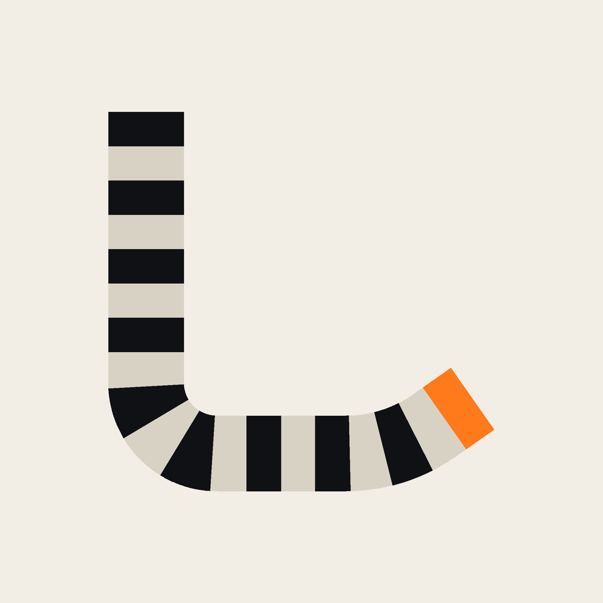

Этот сайт
Моя первая страничка: собрана на HTML и CSS вместе с нейросетями и выложена через GitHub Pages.
готово
Лимур, начинающий разработчик
Учусь разрабатывать и вайб-кодить: придумываю идеи, собираю их вместе с нейросетями и выкладываю готовое по одному проекту.
Моя первая страничка: собрана на HTML и CSS вместе с нейросетями и выложена через GitHub Pages.
готово